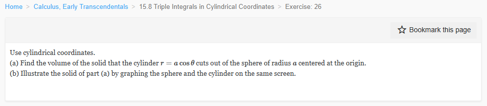

Please solve the problem in the following image.
(Image `20260929_023017_551746_utc_0800_0.png`. Alt text: Image: human_20260929_023017_551746_utc_0800)

20260929_023017_551746_utc_0800_0.png
End of problem
Answer
## Setting up the integral
The cylinder $r = a\cos\theta$ exists only where $\cos\theta \ge 0$, so we restrict $\theta$ to
$[-\tfrac{\pi}{2},\tfrac{\pi}{2}]$. The sphere of radius $a$ centered at the origin has equation
$r^2+z^2 = a^2$, i.e. $-\sqrt{a^2-r^2}\le z\le\sqrt{a^2-r^2}$.
In cylindrical coordinates the volume element is $dV = r\,dz\,dr\,d\theta$, so
$$
V=\int_{-\pi/2}^{\pi/2}\int_{0}^{a\cos\theta}\int_{-\sqrt{a^2-r^2}}^{\sqrt{a^2-r^2}} r\,dz\,dr\,d\theta .
$$
## Evaluating the integral
**Step 1 — integrate over $z$:**
$$
\int_{-\sqrt{a^2-r^2}}^{\sqrt{a^2-r^2}} dz = 2\sqrt{a^2-r^2}.
$$
**Step 2 — integrate over $r$:** let $u=a^2-r^2$, so $du=-2r\,dr$. The outer limit $r=a\cos\theta$
gives $u=a^2-a^2\cos^2\theta = a^2\sin^2\theta$. Hence
$$
\int_{0}^{a\cos\theta} 2r\sqrt{a^2-r^2}\,dr = \int_{a^2\sin^2\theta}^{a^2}\!\!\sqrt{u}\,du
=\frac{2}{3}\Bigl(a^3-a^3|\sin\theta|^{3}\Bigr)=\frac{2a^3}{3}\bigl(1-|\sin\theta|^{3}\bigr).
$$
**Step 3 — integrate over $\theta$:** the integrand is even, so
$$
V=\frac{2a^3}{3}\!\int_{-\pi/2}^{\pi/2}\!\!\bigl(1-|\sin\theta|^{3}\bigr)d\theta
=\frac{4a^3}{3}\!\int_{0}^{\pi/2}\!\!\bigl(1-\sin^3\theta\bigr)d\theta .
$$
Using $\displaystyle\int_0^{\pi/2}1\,d\theta=\frac{\pi}{2}$ and $\displaystyle\int_0^{\pi/2}\sin^3\theta\,d\theta=\frac{2}{3}$,
$$
V=\frac{4a^3}{3}\!\left(\frac{\pi}{2}-\frac{2}{3}\right)=\frac{4a^3}{3}\cdot\frac{3\pi-4}{6}.
$$
$$
\boxed{\,V=\dfrac{2a^3(3\pi-4)}{9}\,}
$$
A Monte‑Carlo check with $a=1$ gives $V\approx 1.2048$, matching the formula's value $V=\frac{2(3\pi-4)}{9}\approx 1.2055$.
## Sketching the geometry
In Cartesian form, $r=a\cos\theta$ becomes $x^2+y^2 = ax$, or equivalently
$$
\bigl(x-\tfrac{a}{2}\bigr)^{2}+y^{2}=\bigl(\tfrac{a}{2}\bigr)^{2},
$$
i.e. a cylinder of radius $\tfrac{a}{2}$ whose axis is the line $x=\tfrac{a}{2},y=0$, parallel to the $z$-axis.
This cylinder is entirely inside the sphere of radius $a$, and where they meet we have
$z=\pm\sqrt{a^2-r^2}=\pm a\,|\sin\theta|$.
Image `pyplot_2d.png` not found.
The figure above shows the projection onto the $xy$‑plane. The big disk is the sphere's equator $x^2+y^2\le a^2$, and the smaller orange disk is the cylinder's cross‑section $\bigl(x-\tfrac{a}{2}\bigr)^2+y^2\le\bigl(\tfrac{a}{2}\bigr)^2$. The cylinder passes through the origin, so the lune (gold) — the part of the sphere cut out by the cylinder — is the lens on the right, while the region on the left inside the sphere but outside the cylinder is *removed* by the cylinder.
Image `pyplot_3d.png` not found.
The 3D picture shows the cylinder sitting inside the sphere; the two red great circles where the cylinder and sphere meet trace out the boundary of the solid in question.
## Answers
**(a)** $\displaystyle V=\dfrac{2a^3(3\pi-4)}{9}$.
**(b)** See the figures above (top‑down and 3D views).
---